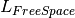
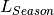
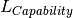

Path Loss¶
Path loss is the amount of attenuation a radio signal undergoes between the two ends of a link. Path loss comprises the sum of the attenuation of the path if there were no obstacles in the way (Free Space Path Loss) and the attenuation caused by obstacles (Excess Path Loss). It is also necessary to consider a margin to allow for possible fading of the radio signal (Fade Margin), and an allowance for the seasonal effects of foliage growth, to achieve a reliable link. This path loss must be lower than the equipment capability for the data rate required.
LINKPlanner uses the following equation to judge whether a particular link can be installed:
Path Loss Equation:
Where |
Is |
See also |
|---|---|---|
 |
Free Space Path Loss (dB) |
|
Excess Path Loss (dB) |
||
Fade Margin Requirement (dB) |
||
 |
Seasonal Fading (dB) |
|
 |
Equipment Capability (dB) |
When the link has been installed, web pages provide information about the link loss currently measured by the equipment, both instantaneously and averaged.
Adaptive modulation ensures that the highest possible throughput is achieved instantaneously, taking account of propagation and interference. See also: